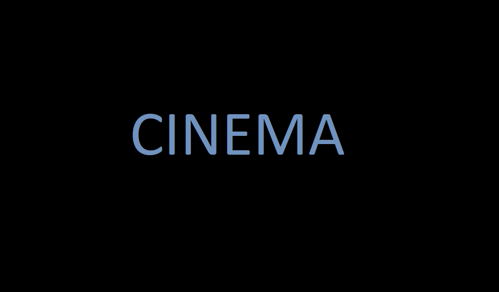
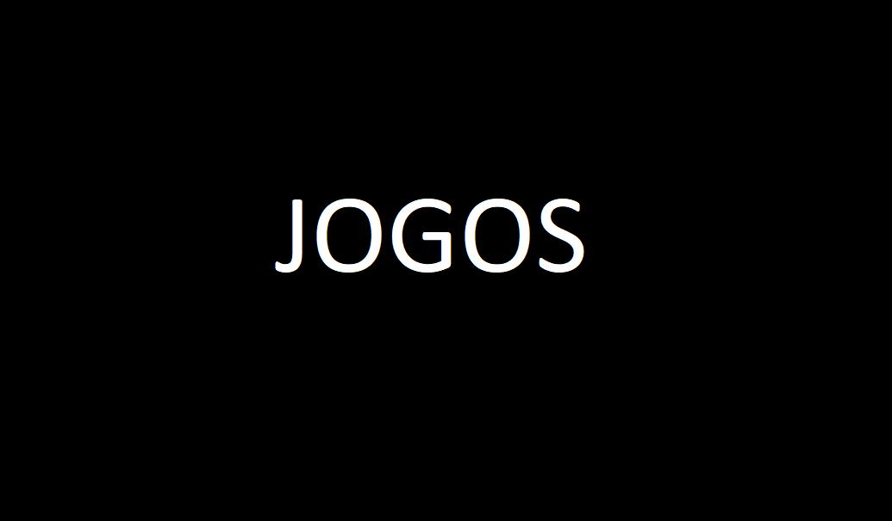

Sejam bem vindos ao "Tá gravando?"!
"Tá gravando?" é um projeto criado pelos alunos da FATEC Rubens Lara; Allan S. Bezerra, Juan Bertoluzzi e Lucas Rocha. Incialmente abordaremos diversos assuntos; como cinema, jogos, músicas, series e afins. Inspirados por sites como Jovem Nerd e 99vidas, temos o intuíto de trazer informação e um conteúdo objetivo, com uma dose de humor inteligente ou não.